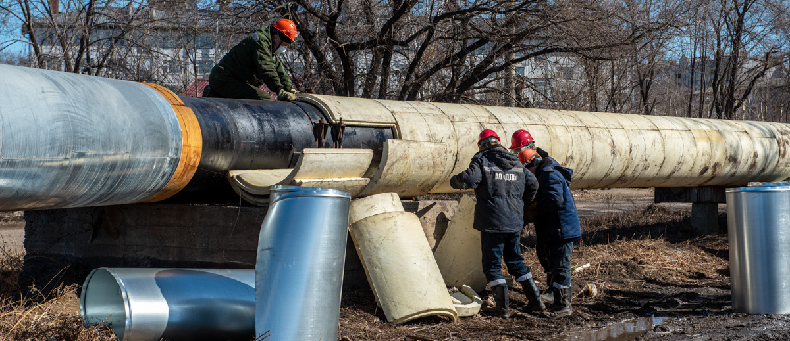
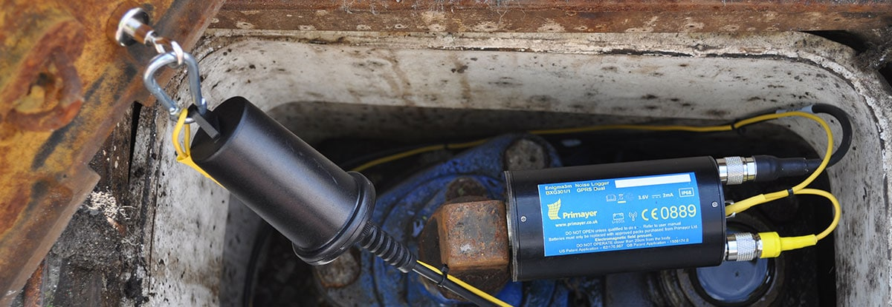

Теплоснабжение
Поиск утечек на наружных сетях теплоснабжения
Бесканальная прокладка (без лотков)
Поиск утечек на наружных сетях теплоснабжения
Для покупки современного оборудования нужны деньги, для подготовки опытного специалиста нужно время. Можно купить свой собственный течеискатель, а можно пользоваться услугами специализированной компании с первоклассным оборудованием, грамотными специалистами и многолетним опытом работы.
Диагностическая лаборатория имеет все необходимое для работы оборудование. Наши постоянные клиенты хорошо знают, как нужно подготовиться к работе чтобы использовать диагностическую лабораторию на полную мощность.
Для тех кто ни разу не пользовался нашими услугами – несколько пожеланий:
- Подготовьте схему участка сети на котором будут проводиться работы (желательно со всеми коммуникациями)
- Если под подозрением ввод на дом, возьмите ключи от подвала заранее
- Если есть возможность, организуйте раскопку сразу после обнаружения утечки
Для установки акселерометрических датчиков течеискателей необходим доступ к трубе, либо к арматуре установленной на трубопроводе (труба, шток задвижки, пожарный гидрант). Датчики выполнены в специальном водонепроницаемом корпусе и могут устанавливаться под водой.
Ремонт и устранение утечек на наружных сетях теплоснабжения
Компания «Аква-тэк» предлагает полный спектр услуг по устранению скрытых утечек и ремонту инженерных сетей.
Мы предлагаем:
- Устранение утечек на водопроводных и тепловых сетях
- Прокладка водопроводных, тепловых, канализационных сетей
- Санация
- Ремонт и восстановление колодцев, тепловых камер
- Замена запорной арматуры
- Ремонт поврежденной теплоизоляции
- Поставка ремонтных хомутов, соединительных муфт, запорной арматуры
Наличие собственной техники, оборудования и квалифицированного персонала позволяет нашей компании вести гибкую, конкурентоспособную ценовую политику, а так же создает комфортные и удобные условия сотрудничества для наших партнеров.
Работы проводятся высококвалифицированными специалистами при использовании самых современных технологий.
Канальная прокладка сетей теплоснабжения
Специалисты компании «Аква-тэк» выполнят работы по прокладке наружных сетей водоснабжения, теплоснабжения и канализации любой сложности с применением различных материалов и методов в соответствии с проектной документацией.
Большой опыт работы и наличие собственной техники, позволяет проводить монтаж без привлечение сторонних организации с максимальной экономией денежных средств Заказчика.

Бесканальная прокладка сетей теплоснабжения

Надземная прокладка